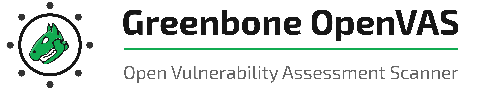

OpenVAS
O OpenVAS (Open Vulnerability Assessment System) é uma plataforma de código aberto para avaliação de vulnerabilidades e gerenciamento de vulnerabilidades. Ele faz parte do Greenbone Vulnerability Management (GVM) e é amplamente utilizado para identificar falhas de segurança em sistemas, redes e aplicações.
Principais Funcionalidades:
- Varredura automatizada de vulnerabilidades em hosts e redes
- Base de dados atualizada com milhares de testes de vulnerabilidades (NVTs)
- Relatórios detalhados e personalizáveis
- Integração com ferramentas de gerenciamento de vulnerabilidades
- Interface web para configuração e visualização dos resultados
Recomendado para:
Profissionais de segurança da informação, administradores de sistemas e redes, e equipes de TI que buscam identificar, analisar e corrigir vulnerabilidades em seus ambientes.
üîó Site Oficial